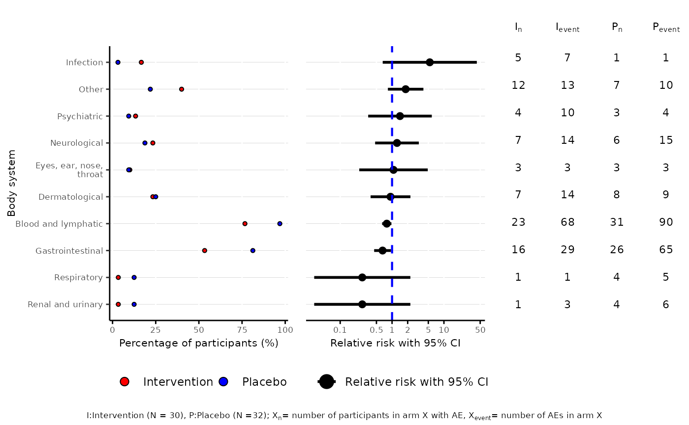

Dot plot to visualise AE and harm profiles in two-arm randomised controlled trials
aedot.Rdaedot creates a plot that summarises the AE and harm profiles via the following visualisations:
left panel: percentage of participants who had an event in each treatment group
central panel: relative risk/ risk difference/ incidence rate ratio/ odds ratio of observing each event in the treatment group compared with the control group, along with 95% confidence interval
right panel: data table containing number of participants with at least one event and number of events by treatment group
Arguments
- data
data frame with adverse_event, body_system_class, id and arm columns (optional: date_rand, last_visit and variables to be included in model)
- control
factor level of control arm
- intervention
factor level of intervention arm
- body_system_class
name of body_system_class column
- id
name of id column
- arm
name of arm column
- date_rand
name of date_rand column
- last_visit
name of last_visit column
- model
unadjusted relative risk/risk difference or model used for computation of treatment effect estimate and 95% CI
- variables
vector of variable names to be included in the model for computation of treatment effect estimate (excluding arm)
- dot_colours
vector of colours for dots on percentage of participants plot (left plot)
- save_image_path
file path to save dot plot as image
Value
dot plot with proportions alongside treatment effect estimates with accompanying 95% confidence interval
Treatment Effect Estimate
The treatment effect and its 95% confidence interval are estimated via the following models below:
unadjusted (RR): unadjusted relative risk
unadjusted (RD): unadjusted risk difference
Poisson (rate): fitting a generalised linear model with Poisson family and log link with length of follow up time as offset
Poisson (count): fitting a generalised linear model with Poisson family and log link with count as response
Negative Binomial (rate): fitting a Negative Binomial model with length of follow up time as offset
Negative Binomial (count): fitting a Negative Binomial model with count as response
Binomial (logit): fitting a generalised linear model with Binomial family and logit link
Binomial (log): fitting a generalised linear model with Binomial family and log link
Binomial (identity): fitting a generalised linear model with Binomial family and identity link
The default model is the unadjusted (RR) model.
For Poisson and Negative Binomial models, the treatment effect estimate is the Incidence Rate Ratio (IRR). For Binomial (logit) model, the treatment effect estimate is the Odds Ratio (OR). For Binomial (log) model, the treatment effect estimate is the Relative Risk (RR). For Binomial (identity) model, the treatment effect estimate is the Risk Difference (RD).
The reference group for the treatment arm in the regression model is the control arm.
Additional covariates besides arm can be added into the model via the argument variables.
Note that interaction terms cannot be added to the model.
Examples
df2$aebodsys <- as.factor(df2$aebodsys)
aedot(df2, body_system_class="aebodsys", control="Placebo", intervention="Intervention")
#> Bin width defaults to 1/30 of the range of the data. Pick better value with
#> `binwidth`.
